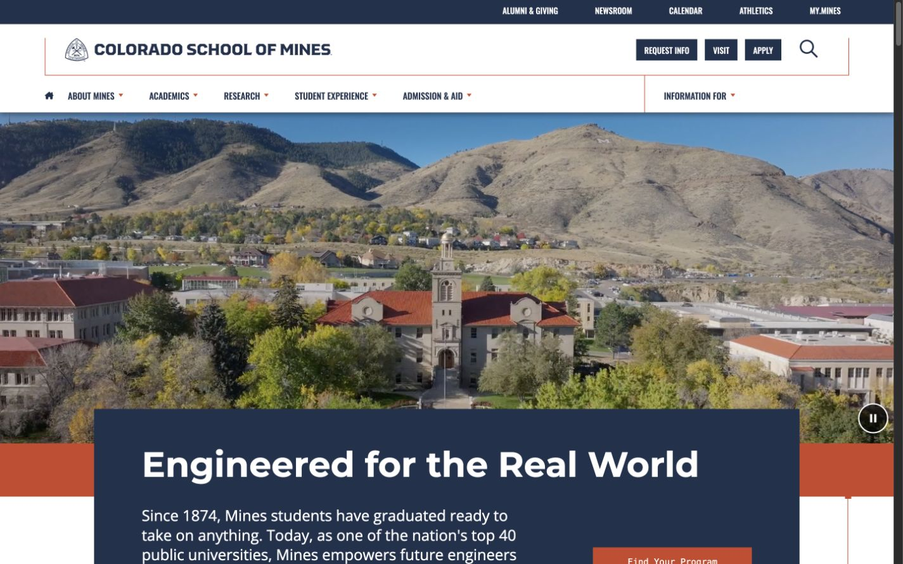
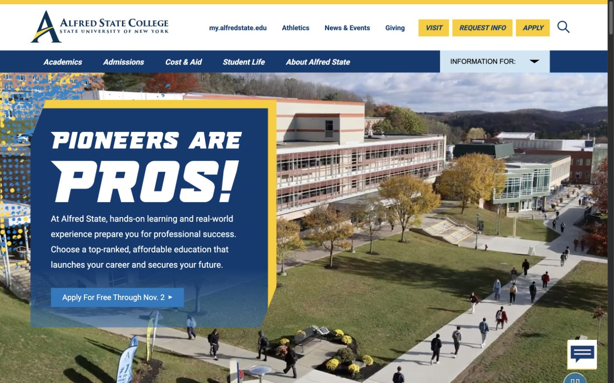
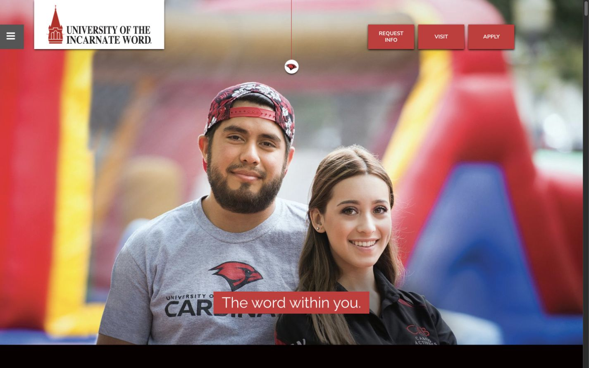
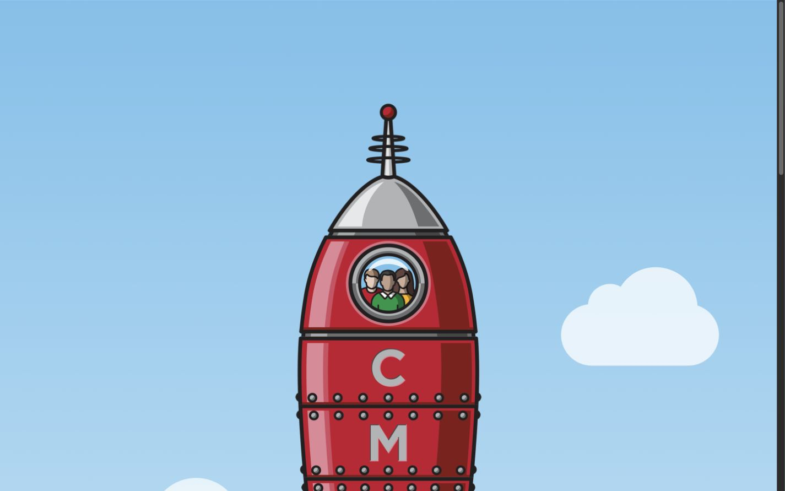

Practical work for complicated websites.
These are selected projects from agency teams and client work. Open a project marked View my contribution to see my role, the work I handled, and the technologies involved.




Many of these projects were completed with agency teams.
Want to know whether my experience fits your project? Tell me what you’re building, and I’ll share the responsibilities and technical work most relevant to it.
Discuss your project